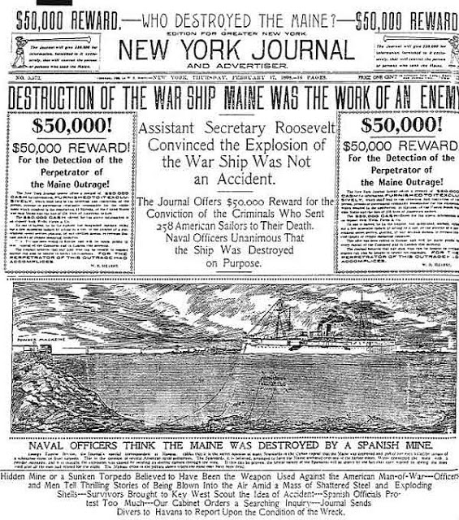
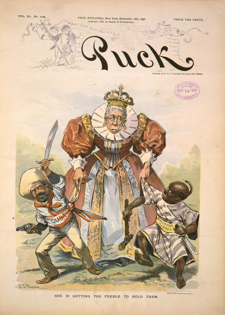
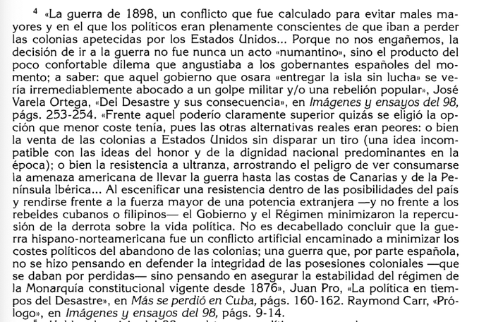

Los Hilos de Monik
Más se perdió en Cuba...
Publicado el 1 de febrero de 2021 - 26 tweets - Hilo original en Twitter
Ayer leía este titular de @el_pais y de repente pensé: wow, nunca me había detenido a pensar qué consecuencias le trajo a España el perder a Cuba en 1898.
Hablemos un poco del sentido de la frase "más se perdió en Cuba"
Artículo de El País: La deuda pública escala hasta el 117,1% del PIB en 2020, el mayor nivel desde la guerra de Cuba
2
El 3 de julio de 1898, la breve y desastrosa batalla de Santiago de Cuba certificó la derrota española en la guerra de Cuba.
Bajas españolas: 343 muertos, 151 heridos, 1 889 prisioneros, 6 barcos perdidos.
Bajas estadounidenses: 1 muerto, 2 heridos y ningún barco hundido.
3
La explosión del USS Maine el 15 de febrero de 1898 provocó que poco después, el 25 de abril, EE.UU. le declarara la guerra a España.
La incorporación de tropas estadounidenses a las guerras en Cuba y Filipinas aceleró el llamado "fin del Imperio español"
4
La Batalla de Santiago de Cuba no fue la única gran derrota ante EE.UU.: en mayo de 1898 la flota española fue también prácticamente aniquilada durante la Batalla de Cavite en la bahía de Manila.
1898 pasó a conocerse en España como "el año del desastre" o "el desastre del 98".
5
El 18 de julio de 1898, dos semanas después de la derrota en Santiago de Cuba, el gobierno español solicitaba a través de la embajada francesa en Washington, el cese de las hostilidades.
La propuesta de España era ceder Cuba y conservar el resto de las colonias.
6
La respuesta de EE.UU. fue exigir la evacuación inmediata de Cuba y la entrega, en concepto de indemnización, de Puerto Rico, Guam y la ciudad y puerto de Manila.
El Tratado de París, firmado el 10 de diciembre, ampliaría esas exigencias: la cesión de toda Filipinas
7
En París no hubo representantes de ninguna de las colonias.
spaña recibió una indemnización de 20 millones de dólares por la renuncia a Cuba, Puerto Rico, Filipinas y Guam.
EE.UU. vendió las Marianas a Alemania en 1899.
Fue humillante para España y para sus ex-colonias.
8
Máximo Gómez lo resumió así:
Tristes se han ido ellos y tristes hemos quedado nosotros; porque un poder extranjero los ha sustituido. Yo soñaba con la paz con España, yo esperaba despedir con respeto a los valientes soldados españoles...
9
Mucho se ha criticado la inflexibilidad de España al negarse a dar mayores libertades políticas y económicas a la Cuba colonial, lo cual llevó a la guerra.
Este editorial en El País de abril de 1896 refleja la opinión pública de la época.
10
"Demócratas somos, con delirio amamos la libertad, pero si para dársela a Cuba hemos de ver regresar a nuestro ejército humillado, entristecido por una derrota sin lucha y sin gloria (...) entonces renegaríamos de la libertad y de la democracia"
11
La incorporación de los EE.UU. a la guerra provocó que sectores españoles previamente anti-belicistas, se tornaran hacia el nacionalismo.
Ganar (o al menos hacer) la guerra se convirtió en una cuestión de honor en el discurso político de la época.
12
Por ello, Sanz y Escartín luego dijera
Los españoles no podemos quejarnos de lo que nos ha sucedido, porque en más o en menos, de ello somos todos responsables: por haber ido impulsados por el vértigo del patriotismo hasta donde la razón no nos hubiera llevado.
13
Otros autores dicen que ir a la guerra fue una calculada decisión política: el mal menor. El gobierno español temía que reconocer la independencia de las colonias desencadenaría protestas en la península. Por así decirlo, era mejor perder ante una potencia extranjera
14
El "desastre de 1898" fue importante por el proceso de crítica y crisis de confianza que suscitó en la sociedad española.
Surge el Regeneracionismo, contrario a la Restauración.
Las transformaciones que reclamó desde 1898 se mantendrían durante buena parte del siglo XX.
15
Desde entonces serán crecientes los nacionalismos catalán y vasco, así como el republicanismo y el socialismo.
La cantidad de vidas humanas perdidas y las condiciones en las que volvieron los soldados avivaron la búsqueda de culpables y las críticas a los partidos dinásticos.
16
¿Cuantos españoles murieron en la guerra? Se estima que entre 1895-98, 60 000 soldados españoles perdieron su vida en Cuba, la mayoría por enfermedades infecciosas.
Muchos de estos soldados eran campesinos pobres que no podían pagar las quintas para eludir el servicio militar.
17
El que los jóvenes de clase alta pagaran para evitar ir a la guerra, provocó protestas obreras y sentimiento anti-militarista.
El "año del desastre" vio nacer a la "generación del 98", cuya obra literaria reflexiona sobre los problemas sociales de la España del momento.
18
¿Y qué pasó con la economía?
Una vez fracasado el intento de endosar la deuda generada por la guerra —conocida como "deuda cubana"— a EE.UU. o a Cuba, al gobierno español no le quedó otra opción que asumir la cubana como propia y fusionarla con la española.
19
Se estima que la guerra costó a España entre 3 y 4 billones de pesetas, y fue financiada casi exclusivamente a través de la emisión de deuda pública. Al no hacerlo a través de impuestos, los ciudadanos solo vieron el real impacto económico al España perder Cuba.
20
En caso de que España hubiese ganado, la liquidación de los gastos de guerra se hubiera llevado a cabo a partir de la Hacienda de Cuba, sin afectar al contribuyente español.
El Tratado de Paris (que incluía intereses, amortizaciones y tasas de cambio) casi duplicó la deuda.
21
La deuda dejó a España al borde de la bancarrota: en 1898 ascendía a 10 596 millones de pesetas, una cifra superior al PIB de ese año.
A Raimundo Fernández Villaverde, al frente de Hacienda, se le reconoce el mérito de la política económica para sacar al país de la crisis.
22
Entre 1898 y 1906, el Estado español tuvo que dedicar el 43% de su presupuesto al pago de la deuda. Entre 1907 al 1919, el 36%.
Esto, por supuesto, tuvo un impacto en la sociedad. Por una parte, la inflación de precios y la depreciación de la peseta.
23
Entre 1898-99, el impuesto de consumos, pagado en la compra de productos de primera necesidad, generó incrementos de recaudación que superaron a todos los demás tipos de impuestos.
Se estima que el alza de los precios fue de un 30-35%.
24
De nuevo cito a Sanz y Escartín: "El encarecimiento de la vida en España es el resultado lógico, inflexible, de un hecho de índole exclusivamente monetario"
Pero no todo fue negativo.
25
El aumento de la inversión privada y la inversión extranjera directa, la repatriación de capitales de los españoles en Cuba (2 billones entre 1898-1906) y las remesas de los emigrantes, impulsaron la transformación agrícola y la diversificación industrial de España.
26
El "desastre del 98" al final forzó el desarrollo económico y modernización de España.
Pero el conflicto político entre el Regeneracionismo y la Restauración continuó por décadas, influyendo en las causas de la Guerra Civil de 1936-39.